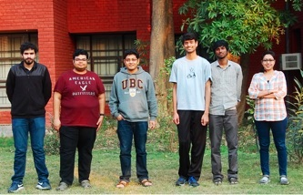
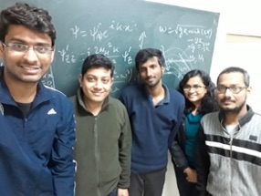
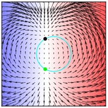
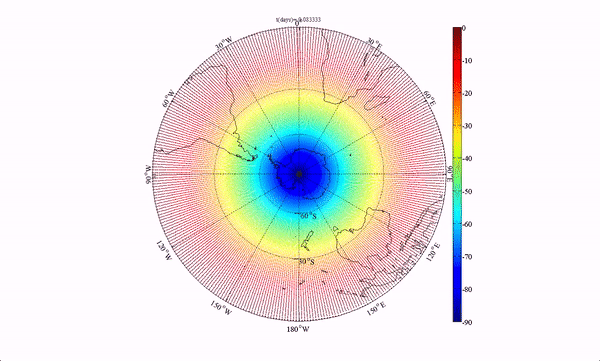
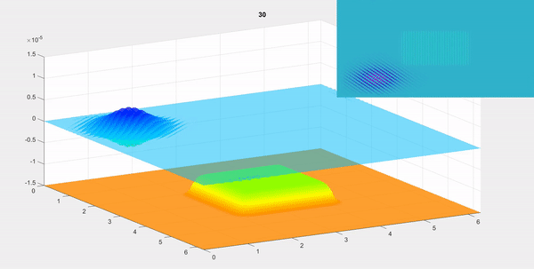
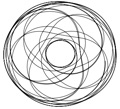
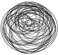
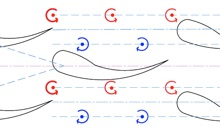

From Left: Divyanshu, Mihir, Myself, Raunak, Saranraj, Shweta (Kanpur, Winter 2017)



From Left: Raunak, Myself, Saranraj, Akanksha and Subhajit (Kanpur, Winter 2019)




Environmental and Geophysical
Fluids Group



Vortex merging dynamics: Vortex merging in shear layers plays a crucial role in the transition to turbulence. We have provided a mechanistic understanding of merging, and have predicted merging patterns solely from the linear initial conditions. Next we are investigating how we can tune initial conditions to obtain optimal turbulence and mixing.
Bragg resonance: Weakly nonlinear interactions between surface waves and bottom topography (inset shows top-view) can be used for various coastal engineering applications, e.g. wave energy harvesting by wave focussing, wave deflection for protection of off-shore structures. We are investing several theoretical and applied problems on wave-topography interactions. One crucial aspect we are looking at is how wave-topography interactions affect tracer and inertial parcels.
Internal waves: Internal waves in oceans are often formed when tides cause the stratified ocean water to move to and fro past an underwater topography (as shown here). Using sophisticated mathematical tools as well as numerics, we are investigating multiple problems on internal gravity waves. The one in the left shows surface signature of internal waves, which we are using to reconstruct ocean’s density stratification from surface signature (by forming an inverse problem). Some other problems we are investigating pertains to weakly nonlinear resonant and near-resonant triad interactions in internal waves, and how bottom topography causes triad detuning.
Tracer advection and Lagrangian Coherent Structures (LCS): The video shows a numerical simulation on tracer advection in the Stratospheric polar vortex. There are invisible transport barriers associated with LCS that separates two zones that are dynamically distinct. The same philosophy applies in many other flow situations.
Point vortex dynamics: The motion of point vortices can be expressed in terms of a Hamiltonian formulation. We show that buoyant point vortices can also be expressed in terms of a Hamiltonian. Interestingly, while 4 homogeneous point vortices are necessary for chaos, we show that for buoyant vortices, only 3 are necessary (just like the 3-body problem in celestial mechanics). The left figure shows the periodic motion of 3 homogeneous vortices, while the one in the right shows chaotic motion of 3 buoyant vortices.
Hydrodynamics of fish schooling: Experimental observations suggest that fishes get energetic advantages when they swim in school. These are observed in terms of reduction in tail-beat frequency or in oxygen consumption level compared to solitary swimming. Although it has been conjectured that energetic benefits arise via hydrodynamic interactions with vortices shed by preceding fishes, the real mechanism is still not well understood. We are trying to unravel multiple mysteries surrounding fish swimming.

Dynamical system understanding of shear instabilities: We derive a minimal model of linearized two dimensional shear instabilities that is formulated in terms of an action-at-a-distance, phase-locking resonance between two vorticity waves, which propagate counter to their local mean flow as well as counter to each other. We analyze the prototype of this interaction as an autonomous, nonlinear dynamical system. The normal form of the wave interaction dynamics reveals a new type of inhomogeneous bifurcation - annihilation of a stable and an unstable star node yields the emergence of two neutral center fixed points of opposite circulation.